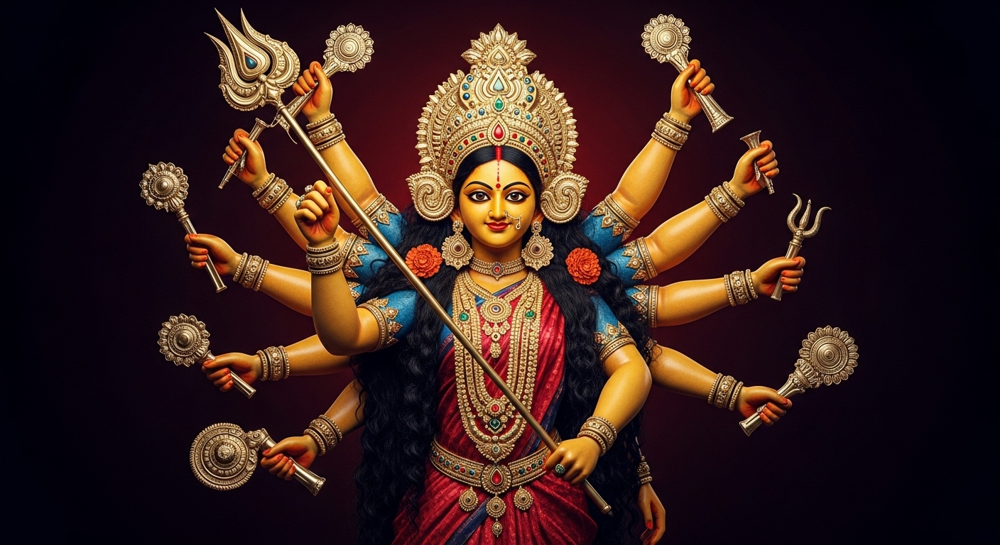

Devotion that feels accessible and heartfelt
Prayer gatherings and temple rituals create a calm, meaningful rhythm for the community.
The community is counting down to Ganesh Chaturthi 2026.
The mandir is more than a venue for festivals. It is a place where worship, cultural identity, and everyday support come together in a way that feels welcoming for families, youth, and visitors.
Prayer gatherings and temple rituals create a calm, meaningful rhythm for the community.
Festivals, music, and cultural programs help preserve Marathi heritage in a joyful way.
From elders to children, the temple creates shared moments of learning, service, and care.
Plan ahead for the celebrations and gatherings that bring the temple community together.
Join us for prayers, cultural events, and community gathering.

Traditional dance, prayers, and festive community celebration.
Whether you want festival details, volunteering information, or a simple point of contact, the temple is ready to welcome you. You can find us at QJ5P+4G8, Medine Camp de Masque.